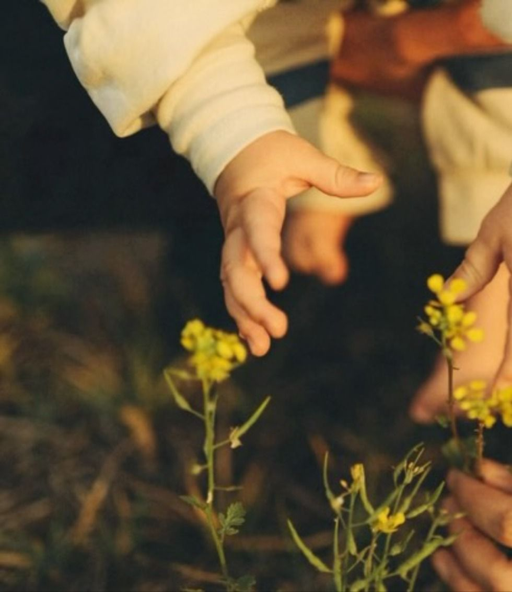
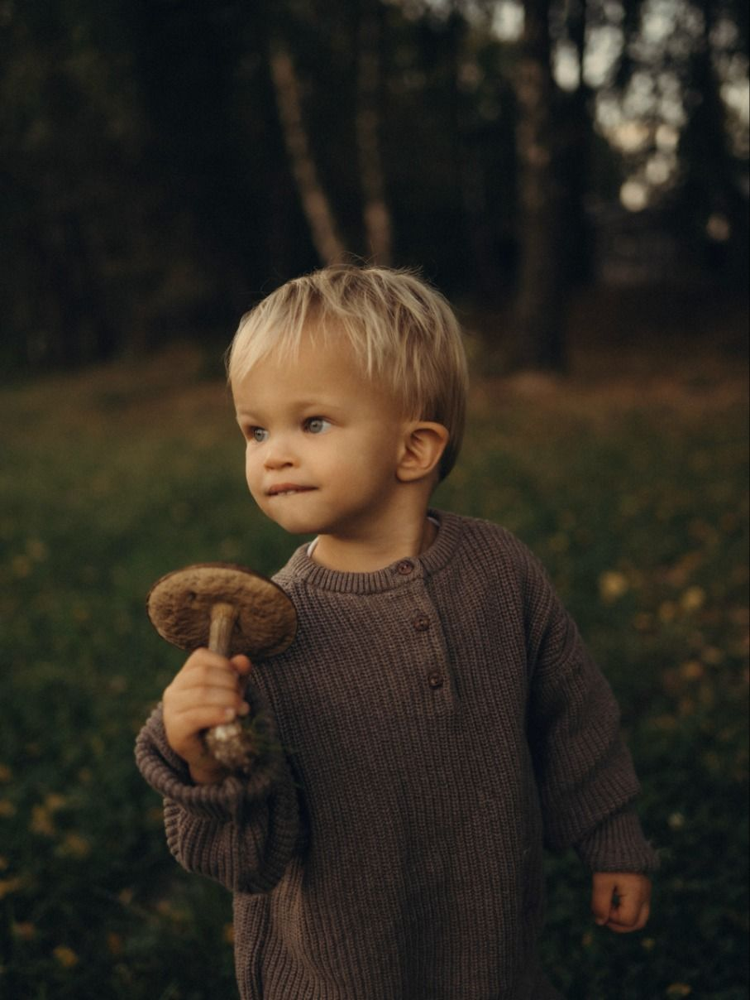
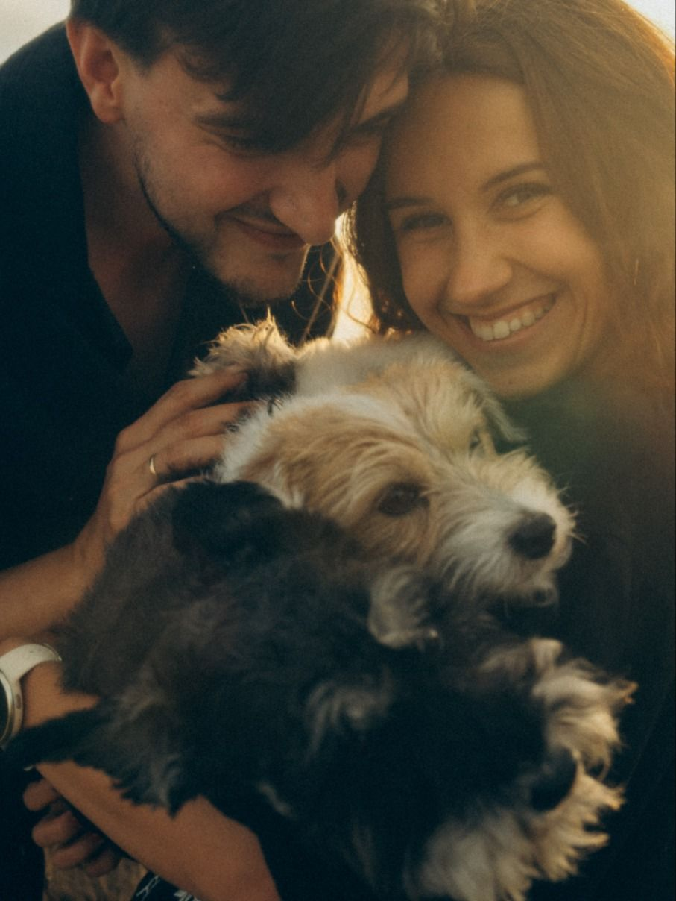
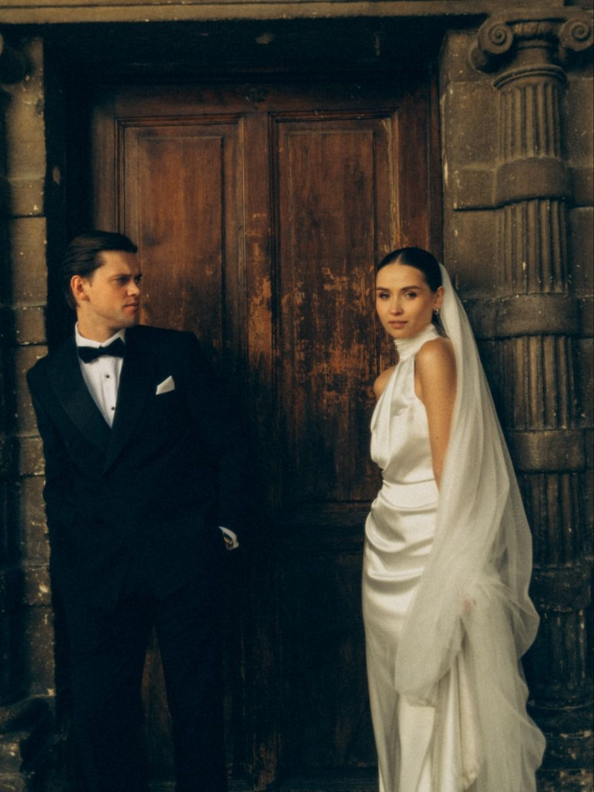
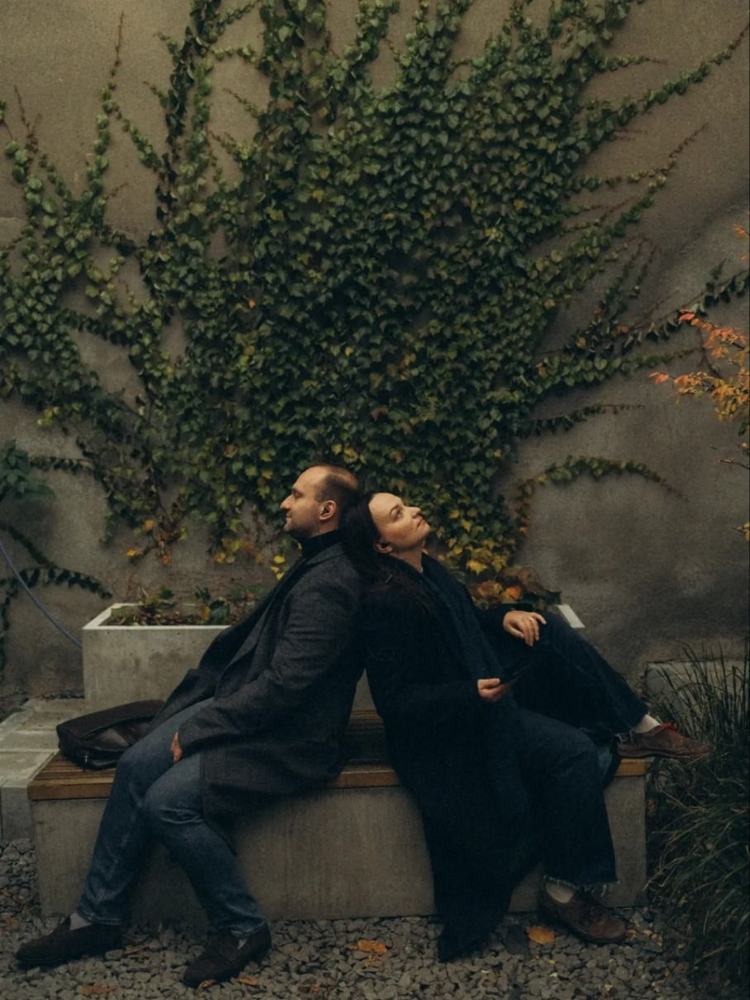
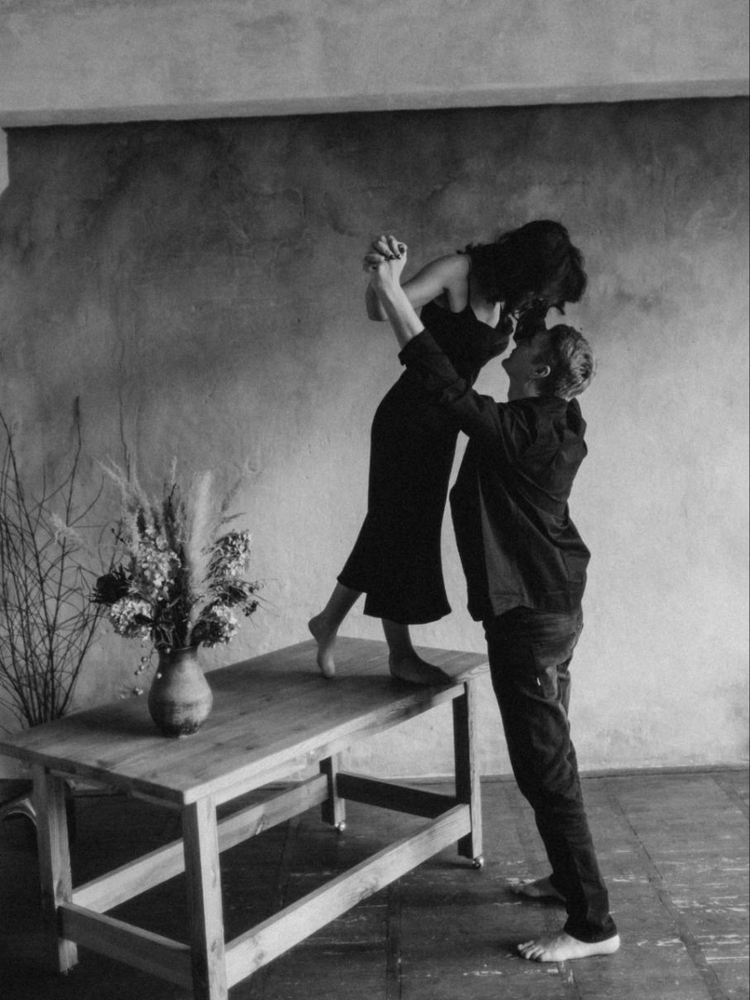
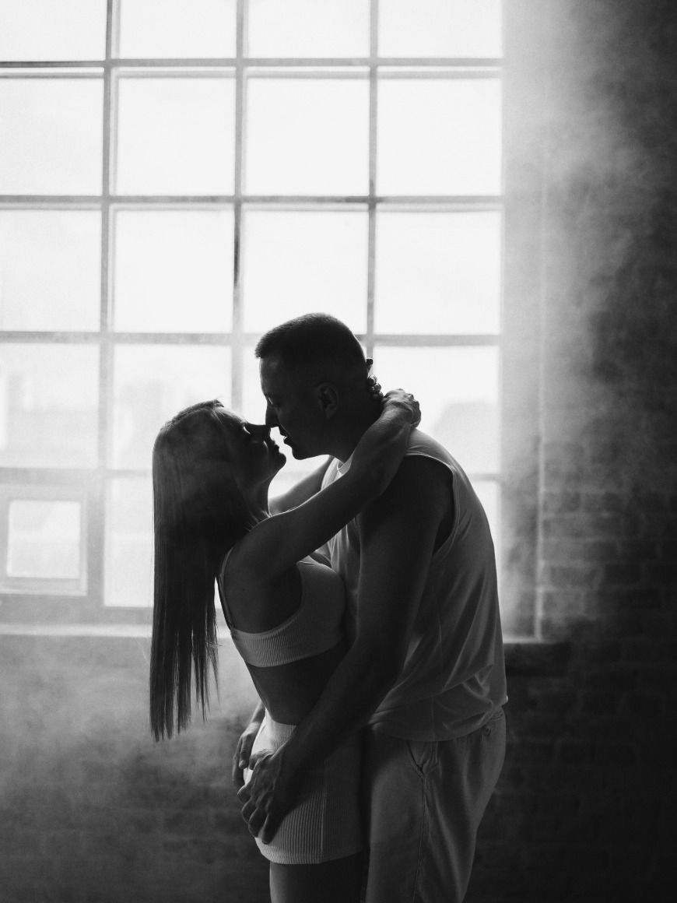
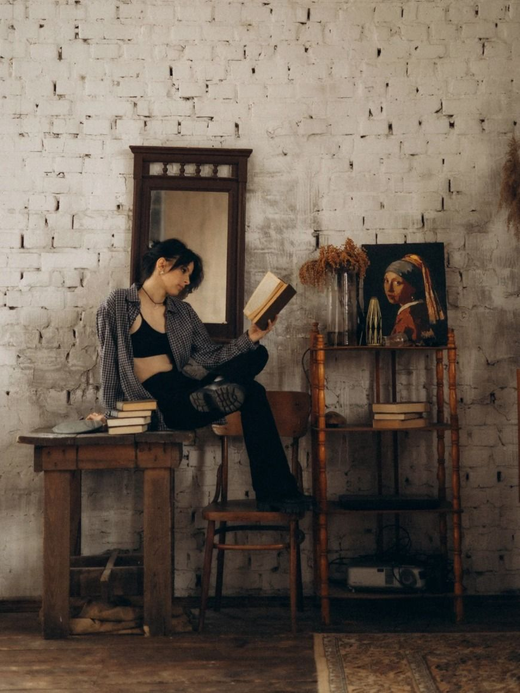

▸ 02AФотограф · Луцьк
Варвара
Шевчук
Сімейні, весільні й портретні фотосесії. Тепле світло, справжні емоції, кадри, які хочеться друкувати.

 ▸ 03A
▸ 03A
▸ 04A
▸ 05A ▸ 06A
▸ 06A ▸ 07A
▸ 07A ▸ 08A
▸ 08A ▸ 09A
▸ 09AЩо я знімаю
Чотири жанри, один погляд
- 01 · #сімейні
Сімейні
На природі, вдома чи в студії. З дітьми, бабусями й собаками, без натягнутих поз.
- 02 · #varkawed
Весільні
Від зборів нареченої до вечора. Репортаж і портрети пари.

- 03 · #varkasportrait
Портрет
Індивідуальні, парні й зйомки вагітності.
- 04 · #vetra_video
Відео
Окремий напрям vetra: відеозйомка весіль і подій.

Портфоліо
Останні зйомки


Як це відбувається
Від повідомлення до фото
Крок 1Пишете в дірект
Дата, скільки вас буде і який настрій хочеться: спокійний, веселий, кіношний.
Крок 2Обираємо місце
Природа, місто, ваш дім або студія Loft на Млиновій, якщо надворі негода.
Крок 3Зйомка й готові кадри
Строк обробки й кількість фото: уточнити у Варвари.
Часті питання
Перш ніж писати
Скільки коштує сімейна фотосесія?
Вказати вартість і що входить: тривалість, кількість фото, строк.
Де можна знімати?
У студії Loft (вул. Млинова, 13, центр Луцька) або на локаціях у місті й поза ним: біля замку, на озері, в полі, у вас удома.
Чи можна з маленькими дітьми й тваринами?
Так. Дитячі й сімейні зйомки з собаками є в портфоліо. Темп підлаштовуємо під малюка.
Ви знімаєте відео?
Так, відео — окремий напрям vetra. Можна поєднати з фотозйомкою весілля чи події.
Вільні дати на сезон
Забронювати зйомку
Instagram: @vvvarkaЛуцьк, Україна
Фотостудія · центр Луцька · з 2016
Лофт на
Млиновій
Вікна на всю стіну, стара цегла, вінтажні меблі й багато денного світла. Погодинна оренда для фото- і відеозйомок.
- Оренда
- 600 грн / година
- Адреса
- вул. Млинова, 13, Луцьк
- Працює
- з 2016 року
- Бронювання
- дірект @loftlutsk
- Телефон
- 063 560 5058
- 5,0 · 11 відгуків
- Площа, стелі
- уточнити

Що є в кадрі
Шість локацій в одному залі





Відгуки в Google
Що кажуть орендарі
«Чудове природнє світло, чарівний мінімалізм»Kostia · Google
«Моя улюблена фотостудія в Луцьку»Відгук у Google
«Хороша лофт студія. Достатньо аксесуарів»Misha · Google
Перед бронюванням
Коротко про оренду
Скільки коштує оренда?
600 грн за годину. Мінімальний час і знижки на довгу оренду: уточнити.
Як забронювати?
Напишіть у дірект Instagram @loftlutsk дату й час. Можна також зателефонувати: 063 560 5058.
Чи є фотограф при студії?
Так, Варвара Шевчук знімає в студії сімейні, портретні й парні фотосесії.
Де саме студія?
Луцьк, вул. Млинова, 13, у центрі міста. Відкрити на Google Maps.
600 грн / година
Забронювати студію
Телефон: 063 560 5058вул. Млинова, 13, Луцьк